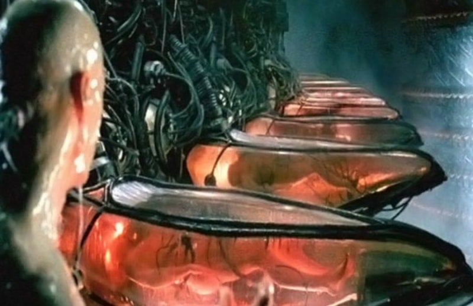

인간 배터리
사형 안해도 되고 교도소에서 사고 안치고 범죄조직 만들 수도 없음.
무죄면 깨워서 풀어주면 되고
전기 생산으로 수익이 1%라도 남는다면 국가에 도움까지 됨.
실현할 기술이 없다는 것이 아쉬울 따름

인간 배터리
사형 안해도 되고 교도소에서 사고 안치고 범죄조직 만들 수도 없음.
무죄면 깨워서 풀어주면 되고
전기 생산으로 수익이 1%라도 남는다면 국가에 도움까지 됨.
실현할 기술이 없다는 것이 아쉬울 따름
곤장 도입해서 음주부터 볼기짝 터지게 쳐야함
뭐 일단 베스트 온건 축하하고
위에도 애들이 달았지만 사이다 패스 친구들이 특히 이쪽에 대해서 이야기할때마다 논파되는게
미국 한국 일본같은 (아무튼 한국도 이제 선진국이래자나) 선진국들도 최근까지 비교적 과학수사가 진보화된 나라들까지
국가의 위압에 의한 강제 혐의부여로 사람까지 죽인 이력이있는데
공권력으로 저렇게 해버리면 이걸 어케 감당함 ㅋㅋㅋ
지금 이 사이트에서 ㅇㄱㄸ하는거랑은 비교도 안되는 사태가 벌어질텐데 ㅋㅋㅋ
음 정치적 수단으로 사람 입 다물게 만드는데 사용한다? 그것도 문제긴 하네.
어차피 노동 시키고 있음 뭔 ㅋㅋㅋㅋ 저게 더 노역보다 이득일것 같으면 사람들 일 왜하냐 그냥 배터리로 생계를 이어나가지.
저 인간배터리 효율도 안나오는데 복지차원에서 기계들이 유지하던거 아님?
ㅇㅇ 맞음 그거랑 기억에 꿈으로 기계들 디버그 시키고있던가? 매트릭스로
이미 인간 배터리는 폼이고 자체 전력 가능하다했음
맞음
죽여도 상관없는데
착해빠져서 자기네들 만들어준게 인류라고 그나마 유지시켜주고 있는거
개드립 좆망함? 뭔 독자연구도 이딴게 개드립?
커뮤 인기게시판 따위에 뭘 얼마나 대단한 걸 바라는거야
일단 독자연구글은 개드립에서 규정위반임 ㅋㅋㅋ
규정 위반인데 뭔말을 하는건데
인간이 발생시키는 전력보다 유지하는데에 들어가는 전력이 훨씬 더 많을껄?
차라리 생체cpu나 ssd가 나을듯
ts시켜서 봉사형
할말이 많지만 그냥 지나갑니다
출근길 개똥글정도로만 보고있었는데 댓글보니까 얘는 진심이네
오랜만에 옛날 영화보고 똥글 쓴 거 맞음. 근데 인간 배터리가 됬다치고 잠자고 있는 사람 본인은 행복할지 불행할지 궁금하네
혹시 옛날에 한국과 일본의 신이 되고 싶으셨진 않으셨나요
내가 신되면 나라 ㅈ되서 안대...
24시간 악몽주입하면 괜찮겠다
어 그럼 죽지 않을까...?
전 손 처 리
바봉가 그냥 필여한거 꺼내면되는뎅
두개있는건 하나만있어도 살어
중국몽을 꿈꾸냐?
난 범죄자들은 저래도된다생각함
니매이 시진핑
난 근 범죄자들 관리하는 사람인데 ... 그럼 장기 적출은 니가와서 할거냐?
법은? 그냥 뇌속에서 생각나는거 별 책임감없이 툭 내뱉으면 되는거냐?
대기중인 사형수들 사형집행도 못하는 나라에서 뭔 장기 적출이냐?
오 내가함
제애그룹 지하강제노동시설 같은거 하던가 ㅋㅋ
신안 노예형 ㄱㄱ
인간이 생산해내는 전기는 진짜 미미함
오히려 저걸 유지하기 위해 주는 양분이 훨씬 큼
뇌피셜 똥글이라 설마 개드립에 갈 줄은 몰랐다;;